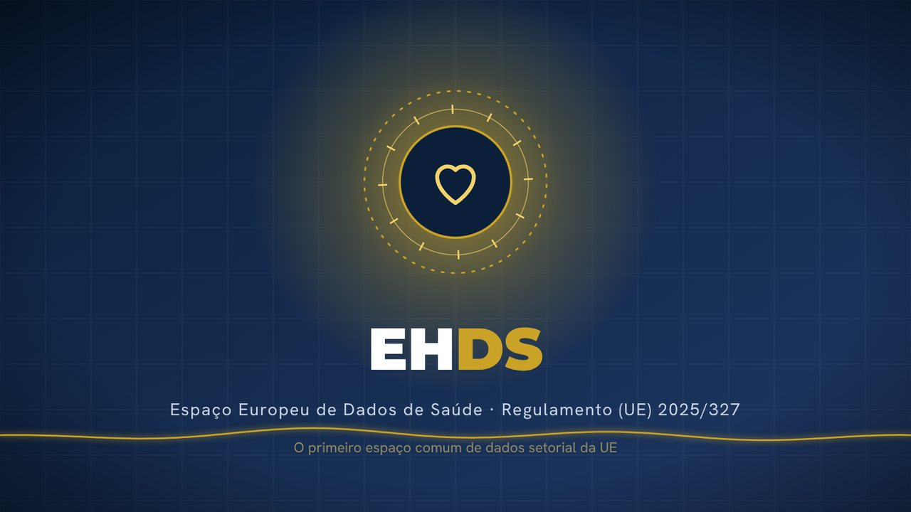

ARG
ARGARGOS › As normas em 4 minutos › EHDS
EHDS em 4 minutos: Para hospitais e fabricantes
O EHDS é o primeiro espaço comum de dados setorial da União. De dados fechados a dados que viajam com o doente. Para hospitais e fabricantes, muda muito.

- 0:00Urgências
- 0:12O regulamento
- 0:30O que muda
- 0:50EHDS
- 0:59Como funciona
- 1:27Dados prioritários
- 1:41Calendário
- 1:59Direitos
- 2:14Em Portugal
- 2:32O que fazer
Dados-chave
- 105 artigos · em vigor desde 26 de março de 2025
- 26.3.2027 aplicação geral
- 2029 primeiro grupo de dados e início do uso secundário
- 2031 segundo grupo de dados
- 2035 últimas fases
- Acesso imediato O doente vê os seus dados
- Marcação CE O registo, produto regulado
- Formato europeu Intercâmbio normalizado
Transcrição
Texto completo da locução
0:00 · Urgências
Uma doente chega a umas urgências no estrangeiro. O seu processo ficou em casa. Os exames, noutro sistema. A medicação, em papel. E o médico decide às cegas.
0:12 · O regulamento
O Espaço Europeu de Dados de Saúde quer mudar isso. Um regulamento de 105 artigos, em vigor desde março de 2025. Dá a cada pessoa o controlo dos seus dados de saúde, e torna os registos interoperáveis. As coimas chegam aos vinte milhões de euros.
0:30 · O que muda
Para hospitais e fabricantes, muda muito. O doente vê os seus dados de imediato, e quem lhes acedeu. Os sistemas de registo de saúde eletrónico passam a ter marcação CE. O intercâmbio faz-se num formato europeu comum. A reutilização, só com autorização. E cada acesso fica registado.
0:50 · EHDS
O EHDS é o primeiro espaço comum de dados setorial da União. De dados fechados a dados que viajam com o doente.
0:59 · Como funciona
Como funciona. Utilização primária: o doente consulta, completa, limita e partilha os seus dados, também no estrangeiro. Produto regulado: interoperabilidade e registo de acessos, com marcação CE. Utilização secundária: organismos de acesso autorizam investigação e IA. Em ambientes seguros, com dados anonimizados. E nunca para discriminar ou reidentificar ninguém.
1:27 · Dados prioritários
Os dados prioritários chegam em dois grupos. Primeiro o resumo do doente, a receita e a dispensa eletrónicas. Depois as imagens e as análises, e as notas de alta. Tudo no formato europeu de intercâmbio.
1:41 · Calendário
O calendário é longo, mas já começou. 26 de março de 2027: aplicação geral. 2029: o primeiro grupo de dados e o início da utilização secundária. 2031: o segundo grupo. E 2035: as últimas fases.
1:59 · Direitos
O doente ganha direitos. Acesso imediato e gratuito. Completar e pedir retificação. Levar os dados consigo, também para o estrangeiro. Decidir quem vê o quê. E saber quem consultou, e quando.
2:14 · Em Portugal
Em Portugal, o Registo de Saúde Eletrónico e a SPMS já ligam o Serviço Nacional de Saúde. A receita sem papel é uma realidade há anos. Um anteprojeto de Lei da Saúde Digital esteve em consulta pública. E o EHDS harmonizará as regras em toda a Europa.
2:32 · O que fazer
O que fazer agora. Inventariar os sistemas, preparar a interoperabilidade e o registo de acessos, organizar os dados para reutilização. O ARGOS verifica o EHDS e o RGPD ao mesmo tempo, com testes ativos nos sistemas reais, sem que os dados saiam do hospital. EHDS: o dado de saúde ao serviço do doente.
Perguntas frequentes
O que é EHDS?
O EHDS é o primeiro espaço comum de dados setorial da União. De dados fechados a dados que viajam com o doente. O Espaço Europeu de Dados de Saúde quer mudar isso. Um regulamento de 105 artigos, em vigor desde março de 2025. Dá a cada pessoa o controlo dos seus dados de saúde, e torna os registos interoperáveis. As coimas chegam aos vinte milhões de euros.
O que exige EHDS?
Como funciona. Utilização primária: o doente consulta, completa, limita e partilha os seus dados, também no estrangeiro. Produto regulado: interoperabilidade e registo de acessos, com marcação CE. Utilização secundária: organismos de acesso autorizam investigação e IA. Em ambientes seguros, com dados anonimizados. E nunca para discriminar ou reidentificar ninguém.
Quais são as datas-chave?
O calendário é longo, mas já começou. 26 de março de 2027: aplicação geral. 2029: o primeiro grupo de dados e o início da utilização secundária. 2031: o segundo grupo. E 2035: as últimas fases.
Qual é a situação em Portugal?
Para hospitais e fabricantes, muda muito. O doente vê os seus dados de imediato, e quem lhes acedeu. Os sistemas de registo de saúde eletrónico passam a ter marcação CE. O intercâmbio faz-se num formato europeu comum. A reutilização, só com autorização. E cada acesso fica registado. Em Portugal, o Registo de Saúde Eletrónico e a SPMS já ligam o Serviço Nacional de Saúde. A receita sem papel é uma realidade há anos. Um anteprojeto de Lei da Saúde Digital esteve em consulta pública. E o EHDS harmonizará as regras em toda a Europa.
O que deve fazer uma empresa já?
O que fazer agora. Inventariar os sistemas, preparar a interoperabilidade e o registo de acessos, organizar os dados para reutilização. O ARGOS verifica o EHDS e o RGPD ao mesmo tempo, com testes ativos nos sistemas reais, sem que os dados saiam do hospital. EHDS: o dado de saúde ao serviço do doente.
Fontes oficiais
Continue com
 Regulamento da IA
Regulamento da IARegulamento da IA em 4 minutos: Portugal: aplicação direta, lei pendente
 NIS2
NIS2NIS2 em 4 minutos: Portugal: a NIS2 já é lei
 Data Act e DGA
Data Act e DGAData Act e DGA em 4 minutos: Portugal: obriga, mas falta quem fiscalize
Locução e música geradas com inteligência artificial (art. 50 do Regulamento da IA). Informação geral, não constitui aconselhamento jurídico; situação a novembro de 2026, segundo as fichas de regulamentação da Software in a Box. Clipes de vídeo com licença Envato.
Para incorporar esta apresentação noutro site: <iframe src="https://argos.softwareinabox.eu/pt/normas/ehds/presentacion/?embed=1" width="960" height="540" allow="autoplay; fullscreen" title="EHDS em 4 minutos: Para hospitais e fabricantes"></iframe> com uma ligação para esta página.
Disponível também em: EspañolDeutschFrançaisFrançais (Belgique)ItalianoNederlandsNederlands (België)Dansk